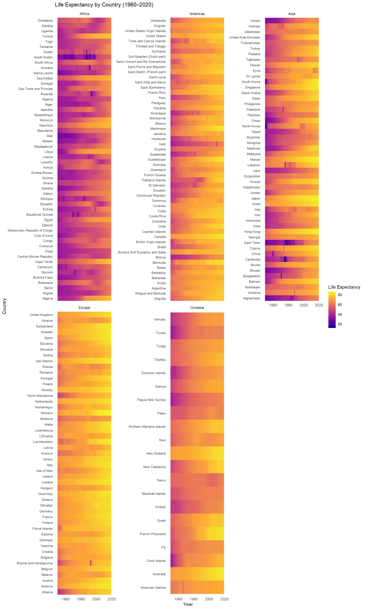

# Packages
library(tidyverse)
library(ggplot2)
library(dplyr)
library(countrycode)
library(stringr)
library(gt)
library(viridis)
library(plotly)
library(sf)
library(gghalves)
library(rnaturalearth)
library(ggridges)
library(htmlwidgets)
# Data
tuesdata <- tidytuesdayR::tt_load('2023-12-05')
life_expectancy <- tuesdata$life_expectancy
life_expectancy_different_ages <- tuesdata$life_expectancy_different_ages
life_expectancy_female_male <- tuesdata$life_expectancy_female_malePresentation
Group project
1. Description of our data
We chose to use the data set life_expectancy, which consists of three data sets:
- life_expectancy
- life_expectancy_female_male
- life_expectancy_different_ages
In this presentation, we focus on the first two data sets.
1.1 The life_expectancy data set
This data set contains the following variables:
- Entity
- Is most often a country, but can also be regions (e.g. Europe, Americas), income groups (e.g. High-income countries, or development status (e.g. Developed countries))
- Code
- Represents a country code (e.g. Afghanistan = AFG)
- Year
- Self-explanatory?
- LifeExpectancy
- The life expectancy in a country in that given year
Let’s take a quick look:
head(life_expectancy)# A tibble: 6 × 4
Entity Code Year LifeExpectancy
<chr> <chr> <dbl> <dbl>
1 Afghanistan AFG 1950 27.7
2 Afghanistan AFG 1951 28.0
3 Afghanistan AFG 1952 28.4
4 Afghanistan AFG 1953 28.9
5 Afghanistan AFG 1954 29.2
6 Afghanistan AFG 1955 29.91.2 The life_expectancy_female_male data set
This data set contains the same variables as the abovementioned, expect for one:
- LifeExpectancyDiffFM
- This variable is the difference in life expectancy between females and males in that given year
head(life_expectancy_female_male)# A tibble: 6 × 4
Entity Code Year LifeExpectancyDiffFM
<chr> <chr> <dbl> <dbl>
1 Afghanistan AFG 1950 1.26
2 Afghanistan AFG 1951 1.27
3 Afghanistan AFG 1952 1.29
4 Afghanistan AFG 1953 1.31
5 Afghanistan AFG 1954 1.28
6 Afghanistan AFG 1955 1.372. Wrangling
First, we limit the follow-up time from 1950 to 2020. For the life_expectancy data set, we also add the variable Decade
life_expectancy <- life_expectancy |>
filter(Year >= 1950 & Year <= 2020)
life_expectancy_female_male <- life_expectancy_female_male |>
filter(Year >= 1950 & Year <= 2020)
life_expectancy <- life_expectancy |>
mutate(Decade = case_when(Year >= 1950 & Year < 1960 ~ 1950, # Create Decade columns
Year >= 1960 & Year < 1970 ~ 1960,
Year >= 1970 & Year < 1980 ~ 1970,
Year >= 1980 & Year < 1990 ~ 1980,
Year >= 1990 & Year < 2000 ~ 1990,
Year >= 2000 & Year < 2010 ~ 2000,
Year >= 2010 & Year < 2020 ~ 2010)) |>
filter(!is.na(Decade)) # Remove NAsWe then create the data sets life_expectancy_countries and life_expectancy_regions
# This dataset contain only countries
life_expectancy_countries <- life_expectancy |>
filter(!(is.na(Code) == T)) # We remove rows with no Code, as these are assigned to countries only
life_expectancy_countries# A tibble: 16,590 × 5
Entity Code Year LifeExpectancy Decade
<chr> <chr> <dbl> <dbl> <dbl>
1 Afghanistan AFG 1950 27.7 1950
2 Afghanistan AFG 1951 28.0 1950
3 Afghanistan AFG 1952 28.4 1950
4 Afghanistan AFG 1953 28.9 1950
5 Afghanistan AFG 1954 29.2 1950
6 Afghanistan AFG 1955 29.9 1950
7 Afghanistan AFG 1956 30.4 1950
8 Afghanistan AFG 1957 30.9 1950
9 Afghanistan AFG 1958 31.5 1950
10 Afghanistan AFG 1959 32.0 1950
# ℹ 16,580 more rows# This dataset contain only regions
life_expectancy_region <- life_expectancy |>
filter(!(is.na(Code) == T)) |>
mutate(
Continent = countrycode(sourcevar = Entity,
origin = "country.name",
destination = "continent"),
Region = countrycode(sourcevar = Entity,
origin = "country.name",
destination = "region")
) |>
filter(!is.na(Region))
life_expectancy_region# A tibble: 16,100 × 7
Entity Code Year LifeExpectancy Decade Continent Region
<chr> <chr> <dbl> <dbl> <dbl> <chr> <chr>
1 Afghanistan AFG 1950 27.7 1950 Asia South Asia
2 Afghanistan AFG 1951 28.0 1950 Asia South Asia
3 Afghanistan AFG 1952 28.4 1950 Asia South Asia
4 Afghanistan AFG 1953 28.9 1950 Asia South Asia
5 Afghanistan AFG 1954 29.2 1950 Asia South Asia
6 Afghanistan AFG 1955 29.9 1950 Asia South Asia
7 Afghanistan AFG 1956 30.4 1950 Asia South Asia
8 Afghanistan AFG 1957 30.9 1950 Asia South Asia
9 Afghanistan AFG 1958 31.5 1950 Asia South Asia
10 Afghanistan AFG 1959 32.0 1950 Asia South Asia
# ℹ 16,090 more rows3. Visualization
First, lets take a look at the changes in life expectancy over time: We’ll start by looking at the continents, and then regions
life_expectancy_region |>
filter(!is.na(Continent)) |>
group_by(Continent, Decade) |>
summarise(mean_life_expectancy = mean(LifeExpectancy)) |>
ggplot(aes(x = Decade, y = mean_life_expectancy, color = Continent, fill = Continent), na.rm = T) +
geom_point() +
geom_smooth(se = T, alpha = 0.2) +
scale_fill_viridis_d() +
scale_color_viridis_d() +
scale_x_continuous(breaks = seq(1950, 2020, by = 10)) +
theme_minimal() +
labs(
x = "Year",
y = "Mean life expectancy (years)",
title = "Mean life expectancies from 1950 to 2020, by continent"
)
life_expectancy_region |>
filter(!is.na(Region)) |>
group_by(Region, Decade) |>
summarise(mean_life_expectancy = mean(LifeExpectancy)) |>
ggplot(aes(x = Decade, y = mean_life_expectancy, color = Region, fill = Region, na.rm = T)) +
scale_color_viridis_d() +
geom_point() +
geom_smooth(se = T, alpha = 0.2) +
scale_fill_viridis_d() +
scale_x_continuous(breaks = seq(1950, 2020, by = 10)) +
theme_minimal() +
labs(
x = "Year",
y = "Mean life expectancy (years)",
title = "Mean life expectancies from 1950 to 2020, by region"
)
# Life expectancy by continent (1950-2020)
life_expectancy_region |>
group_by(Continent, Year) |>
summarise(mean_le = mean(LifeExpectancy)) |>
ggplot(aes(x = Year, y = Continent, fill = mean_le)) +
geom_tile() +
scale_fill_viridis_c(option = "plasma", name = "Life Expectancy") +
labs(title = "Life Expectancy by Continent (1960–2020)",
x = "Year", y = "Continent") +
theme_minimal() +
theme(axis.text.y = element_text(size = 10))
# Life expectancy by country (1950-2020)
ggplot(life_expectancy_region, aes(x = Year, y = Entity, fill = LifeExpectancy)) +
geom_tile() +
facet_wrap( ~ Continent, scales = "free_y") +
scale_fill_viridis_c(option = "plasma", name = "Life Expectancy") +
labs(title = "Life Expectancy by Country (1960–2020)",
x = "Year", y = "Country") +
theme_minimal() +
theme(axis.text.y = element_text(size = 8)) The distribution of life expectancies within regions with comparison of the 1960s and the 2010s.
calculate average for the decade 1960 og 2010
First I calculate the average over decade by country
life_expectancy_avg <- life_expectancy_region %>%
filter(Decade %in% c(1960, 2010)) %>%
group_by(Entity, Region, Decade) %>%
summarise(LifeExpectancy = mean(LifeExpectancy), .groups = "drop")Then i make a violin plot
# Plot half violins
ggplot(life_expectancy_avg, aes(x = Region, y = LifeExpectancy, fill = factor(Decade))) +
# Half violins
geom_half_violin(data = subset(life_expectancy_avg, Decade == 1960), side = "l", alpha = 0.6) +
geom_half_violin(data = subset(life_expectancy_avg, Decade == 2010), side = "r", alpha = 0.6) +
# Punkter for hvert land
#geom_point(aes(group = Entity), position = position_jitter(width = 0.1), size = 2, alpha = 0.7, color = "black") +
#points could be added, but also overflows the visuals of the plot
# Farver
scale_fill_viridis_d(name = "Decade") + #inserting colorscheme
# Tema og labels
theme_minimal(base_size = 14) +
labs(
title = "Life Expectancy per Region: 1960 vs 2010", #lab titles
x = "Region",
y = "Life Expectancy"
) +
theme(axis.text.x = element_text(angle = 45, hjust = 1)) #axis text placement and angle
The distribution over the world across decades
Firstly we join the data with population data and create a new data set
dplyr::glimpse(countrypops)Rows: 13,760
Columns: 5
$ country_name <chr> "Aruba", "Aruba", "Aruba", "Aruba", "Aruba", "Aruba", "…
$ country_code_2 <chr> "AW", "AW", "AW", "AW", "AW", "AW", "AW", "AW", "AW", "…
$ country_code_3 <chr> "ABW", "ABW", "ABW", "ABW", "ABW", "ABW", "ABW", "ABW",…
$ year <int> 1960, 1961, 1962, 1963, 1964, 1965, 1966, 1967, 1968, 1…
$ population <int> 54608, 55811, 56682, 57475, 58178, 58782, 59291, 59522,…# 1. Join life expectancy with countrypops
life_expectancy_pop <- life_expectancy_region %>%
left_join(
countrypops %>%
rename(Code = country_code_3, Year = year, Population = population),
by = c("Code", "Year")
)
str(life_expectancy_pop)tibble [16,100 × 10] (S3: tbl_df/tbl/data.frame)
$ Entity : chr [1:16100] "Afghanistan" "Afghanistan" "Afghanistan" "Afghanistan" ...
$ Code : chr [1:16100] "AFG" "AFG" "AFG" "AFG" ...
$ Year : num [1:16100] 1950 1951 1952 1953 1954 ...
$ LifeExpectancy: num [1:16100] 27.7 28 28.4 28.9 29.2 ...
$ Decade : num [1:16100] 1950 1950 1950 1950 1950 1950 1950 1950 1950 1950 ...
$ Continent : chr [1:16100] "Asia" "Asia" "Asia" "Asia" ...
$ Region : chr [1:16100] "South Asia" "South Asia" "South Asia" "South Asia" ...
$ country_name : chr [1:16100] NA NA NA NA ...
$ country_code_2: chr [1:16100] NA NA NA NA ...
$ Population : int [1:16100] NA NA NA NA NA NA NA NA NA NA ...Then I check for NAs
na_list <- life_expectancy_pop %>%
filter(is.na(Population)) %>%
distinct(Code, Entity) %>%
arrange(Code)
na_list# A tibble: 230 × 2
Code Entity
<chr> <chr>
1 ABW Aruba
2 AFG Afghanistan
3 AGO Angola
4 AIA Anguilla
5 ALB Albania
6 AND Andorra
7 ARE United Arab Emirates
8 ARG Argentina
9 ARM Armenia
10 ASM American Samoa
# ℹ 220 more rowssum(is.na(life_expectancy_pop$Population))[1] 3290Then I check the range of the Year column
range(life_expectancy_region$Year)[1] 1950 2019range(countrypops$year)[1] 1960 2023I then filter the columns to match and check for NAs again
life_expectancy_pop <- life_expectancy_region %>%
filter(Year >= 1962) %>%
left_join(
countrypops %>%
rename(Code = country_code_3, Year = year, Population = population),
by = c("Code", "Year")
)
sum(is.na(life_expectancy_pop$Population))[1] 956# Find alle Codes hvor Population er NA
na_list1 <- life_expectancy_pop %>%
filter(is.na(Population)) %>%
distinct(Code, Entity) %>%
arrange(Code)
na_list1# A tibble: 17 × 2
Code Entity
<chr> <chr>
1 AIA Anguilla
2 BES Bonaire Sint Eustatius and Saba
3 BLM Saint Barthelemy
4 COK Cook Islands
5 FLK Falkland Islands
6 GGY Guernsey
7 GLP Guadeloupe
8 GUF French Guiana
9 JEY Jersey
10 MSR Montserrat
11 MTQ Martinique
12 NIU Niue
13 OWID_KOS Kosovo
14 PSE Palestine
15 SPM Saint Pierre and Miquelon
16 TKL Tokelau
17 TWN Taiwan I then remove the NAs
life_expectancy_pop <- life_expectancy_pop %>%
filter(!is.na(Population))
sum(is.na(life_expectancy_pop$Population))[1] 0Then I insert a new column with decade as a factor, since ggridges works with this.
life_expectancy_pop <- life_expectancy_pop %>%
mutate(DecadeF = factor(Decade)) # Decade as factorI now make a ridgeplot
# 5. Start med grundplot: ridge plot
p <- ggplot(life_expectancy_pop, aes(
x = LifeExpectancy,
y = DecadeF,
fill = DecadeF
)) +
ggridges::geom_density_ridges(scale = 2, alpha = 0.6, color = "white") +
scale_fill_viridis_d(option = "D") +
scale_x_continuous(name = "Life Expectancy") +
scale_y_discrete(name = "Decade", limits = rev) + # <--- vend rækkefølgen
theme_minimal(base_size = 14) +
theme(legend.position = "right") +
labs(title = "Life Expectancy by Decade")
pPicking joint bandwidth of 1.95
Now i decide to add a point with geom_point for the average by decade
# Calculate non-weighted mean per decade
mean_per_decade <- life_expectancy_pop %>%
group_by(DecadeF) %>%
summarise(mean_LE = mean(LifeExpectancy))
p1<- p + geom_point(
data = mean_per_decade,
aes(x = mean_LE, y = DecadeF,color="Unweighted mean"))
p1Picking joint bandwidth of 1.95
And a median
# Calculate median per decade
median_per_decade <- life_expectancy_pop %>%
group_by(DecadeF) %>%
summarise(median_LE = median(LifeExpectancy, na.rm = TRUE))
p2<-p1+geom_line(
data = median_per_decade,
aes(x = median_LE, y = DecadeF, group = 1, color="Unweighted median"),
size = 1,
linetype = "dashed"
)Warning: Using `size` aesthetic for lines was deprecated in ggplot2 3.4.0.
ℹ Please use `linewidth` instead.p2Picking joint bandwidth of 1.95
And the same where it is weighted by population
weighted_means <- life_expectancy_pop %>%
group_by(DecadeF) %>%
summarise(
wmean = sum(LifeExpectancy * Population) / sum(Population)
)
library(matrixStats)
Vedhæfter pakke: 'matrixStats'Det følgende objekt er maskeret fra 'package:dplyr':
countweighted_medians <- life_expectancy_pop %>%
group_by(DecadeF) %>%
summarise(
median_w = matrixStats::weightedMedian(LifeExpectancy, Population, na.rm = TRUE),
.groups = "drop"
)
weighted_medians# A tibble: 6 × 2
DecadeF median_w
<fct> <dbl>
1 1960 54.3
2 1970 60.2
3 1980 65.5
4 1990 68.2
5 2000 70.6
6 2010 72.8 p3 <- p2 +
geom_point(
data = weighted_means,
aes(x = wmean, y = DecadeF, color="Weighted mean"))
p3Picking joint bandwidth of 1.95
p4 <- p3 +
geom_line(
data = weighted_medians,
aes(x = median_w, y=DecadeF, group=1,color="Weighted median"),
linetype = "dashed",
size = 1)
p4Picking joint bandwidth of 1.95And we add a legend
p5<-p4+
scale_color_manual(
name = "Statistics",
values = c(
"Unweighted mean" = "blue",
"Unweighted median" = "blue",
"Weighted mean" = "red",
"Weighted median" = "red"),
guide = guide_legend(override.aes = list(shape = 16, size = 3)))
p5Picking joint bandwidth of 1.95Then, lets see the information per country
First, generate a world heatmap with the average Life Expectancy per country per decade, starting from 1920
##Add the continents to the data
le_continent <- life_expectancy %>%
mutate(continent = countrycode(Entity, origin = "country.name", destination = "continent"))Warning: There was 1 warning in `mutate()`.
ℹ In argument: `continent = countrycode(Entity, origin = "country.name",
destination = "continent")`.
Caused by warning:
! Some values were not matched unambiguously: Africa, Americas, Asia, Europe, High-income countries, Kosovo, Land-locked Developing Countries (LLDC), Latin America and the Caribbean, Least developed countries, Less developed regions, Less developed regions, excluding least developed countries, Low-income countries, Lower-middle-income countries, Micronesia (country), Middle-income countries, More developed regions, No income group available, Northern America, Oceania, Small Island Developing States (SIDS), Upper-middle-income countries, World##Split in decades
le_continent <- le_continent %>%
mutate(decade = floor(Year / 10) * 10)
by_decade <- split(le_continent, le_continent$decade)
names(by_decade)[1] "1950" "1960" "1970" "1980" "1990" "2000" "2010"# Make a working data frame
df <- le_continent %>% as_tibble()
# Country-by-decade average (from 1920s onward)
df_country_dec <- df %>%
mutate(
decade = (Year %/% 10) * 10,
Code = trimws(Code)
) %>%
# keep real countries (valid ISO3 codes) and decades >= 1920
filter(!is.na(Code), Code != "", nchar(Code) == 3, grepl("^[A-Za-z]{3}$", Code),
decade >= 1920) %>%
group_by(Code, Entity, decade) %>%
summarise(avg_lifeexp = mean(LifeExpectancy, na.rm = TRUE), .groups = "drop")
# Consistent colors across decades
zmin <- floor(min(df_country_dec$avg_lifeexp, na.rm = TRUE))
zmax <- ceiling(max(df_country_dec$avg_lifeexp, na.rm = TRUE))
# ANIMATED MAP (all decades from 1920s)
p_anim <- plot_ly(
df_country_dec,
type = "choropleth",
locations = ~Code, locationmode = "ISO-3",
z = ~avg_lifeexp,
frame = ~decade,
text = ~paste0(
"<b>", Entity, "</b><br>",
"Decade: ", decade, "<br>",
"Life expectancy: ", round(avg_lifeexp, 1)
),
hoverinfo = "text",
colorscale = "Viridis",
zmin = zmin, zmax = zmax
) %>%
layout(
title = "Average life expectancy by country — animated by decade (from 1920s)",
geo = list(
showframe = FALSE,
showcoastlines = FALSE,
showcountries = TRUE,
projection = list(type = "natural earth")
)
)
# Save animated map into a HTML file
saveWidget(p_anim, "worldheatmap.html", selfcontained = TRUE)The world heatmap represents the global tendencies, continent differences remain similar decade after decade.
Now, lets see the information of the differences between females and males per country per decade.
##Load the data and make your working dataframe
df <- life_expectancy_female_male %>% as_tibble()
# Gap (Females − Males)
if ("LifeExpectancyDiffFM" %in% names(df)) {
df <- df %>% mutate(Gap = LifeExpectancyDiffFM)
} else if (all(c("LE_Female", "LE_Male") %in% names(df))) {
df <- df %>% mutate(Gap = LE_Female - LE_Male)
} else {
stop("cant find 'LifeExpectancyDiffFM' or 'LE_Female/LE_Male' in the df.")
}
# Clean codes and add decades
df <- df %>%
mutate(
Code = trimws(Code),
decade = (Year %/% 10) * 10
) %>%
filter(
!is.na(Code), Code != "",
nchar(Code) == 3, grepl("^[A-Za-z]{3}$", Code),
decade >= 1950
)
# Mean per country per decade, exclude NA
df_dec <- df %>%
group_by(Entity, Code, decade) %>%
summarise(Gap = mean(Gap, na.rm = TRUE), .groups = "drop") %>%
filter(!is.na(Gap)) %>%
mutate(
Sign = ifelse(Gap >= 0, "Females > Males", "Males > Females"),
decade_str = as.character(decade) # frames as texto
)
pal2 <- c("#ef476f", "#06d6a0")
# Simetric
lim <- max(abs(range(df_dec$Gap, na.rm = TRUE)))
xrange <- c(-lim, lim)
# Buttons per decade
decades <- sort(unique(df_dec$decade_str))
btns <- lapply(decades, function(d) {
list(
label = paste0(d, "s"),
method = "animate",
args = list(
list(d),
list(mode = "immediate",
frame = list(duration = 0, redraw = TRUE),
transition = list(duration = 0))
)
)
})
p_btns <- plot_ly(
df_dec,
x = ~Gap, y = ~Entity,
frame = ~decade_str,
type = "bar", orientation = "h",
color = ~Sign, colors = pal2,
hovertemplate = paste(
"<b>%{y}</b><br>",
"Decade: %{frame}<br>",
"Gap (Females − Males): %{x:.2f} years<extra></extra>"
)
) %>%
layout(
title = "Life Expectancy gap per Country — Decades (since 1950)",
xaxis = list(title = "Years (positive = Females > Males)"),
yaxis = list(title = ""),
barmode = "relative",
height = 800,
updatemenus = list(
list(
type = "buttons",
direction = "right",
x = 1, xanchor = "right",
y = 1.12, yanchor = "top",
buttons = btns # just decades
)
)
) %>%
animation_slider(hide = TRUE) %>% # hide slider
animation_button(hide = TRUE) # hide Play Warning: Specifying width/height in layout() is now deprecated.
Please specify in ggplotly() or plot_ly()# Save as interactive HTML
saveWidget(p_btns, "gap_bar_dec.html", selfcontained = TRUE)The differential plot shows the gender gap and how it remains as females having a bigger life expectancy than males but we can observe some cases in the earlier decades where the males have bigger life expectancy for a few countries.